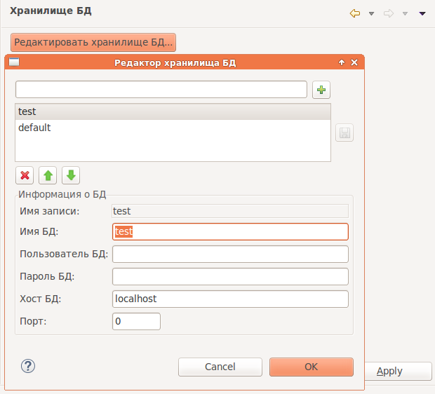

Настройки управляющие хранилищем парамеров подключения к базам данных.

После нажатия на кнопку Редактировать хранилище БД появится диалог, для управления записями настроек для подключения к базам данных.